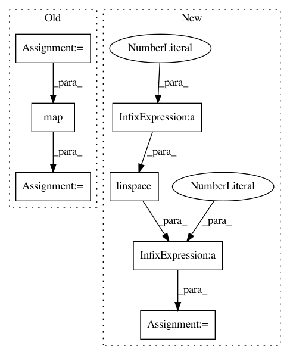

5601c4bb909b4146327fa68c6d5b668f997baaff,pyinterpret/data/dataset.py,DataSet,_build_metastore,#DataSet#Any#,125
Before Change
// the percentile distance of each datapoint to the global median
// dist_percentiles = map(lambda i: int(stats.percentileofscore(dists, i)), dists)
ranks = pd.Series(dists).rank().values
round_to = n_rows / float(bin_count)
rounder_func = lambda x: int(round_to * round(float(x) / round_to))
ranks_rounded = map(rounder_func, ranks)
ranks_rounded = np.array([round(x, 2) for x in ranks / ranks.max()])
return {
"median": medians,
"dists": dists,
After Change
// the percentile distance of each datapoint to the global median
// dist_percentiles = map(lambda i: int(stats.percentileofscore(dists, i)), dists)
bins = np.linspace(0, 100, num=bin_count + 1)
unique_dists = np.unique(dists)
if len(unique_dists) > 1:
ranks_rounded = pd.qcut(dists, bins / 100, labels=False)
unique_ranks = np.unique(ranks_rounded)
else:
ranks_rounded = np.ones(n_rows)
unique_ranks = np.ones(1)
return {
In pattern: SUPERPATTERN
Frequency: 3
Non-data size: 7
Instances
Project Name: datascienceinc/Skater
Commit Name: 5601c4bb909b4146327fa68c6d5b668f997baaff
Time: 2017-03-21
Author: aikramer2@gmail.com
File Name: pyinterpret/data/dataset.py
Class Name: DataSet
Method Name: _build_metastore
Project Name: ContextLab/hypertools
Commit Name: 3c8f5966e66f2222d2cfa3770d2ac923d254b61a
Time: 2016-12-20
Author: andrew.heusser@gmail.com
File Name: python/hypertools/_shared/helpers.py
Class Name:
Method Name: vals2colors
Project Name: ContextLab/hypertools
Commit Name: 50f590603a1dd562453926edaab69267633b8455
Time: 2016-12-20
Author: andrew.heusser@gmail.com
File Name: python/hypertools/_shared/helpers.py
Class Name:
Method Name: vals2colors